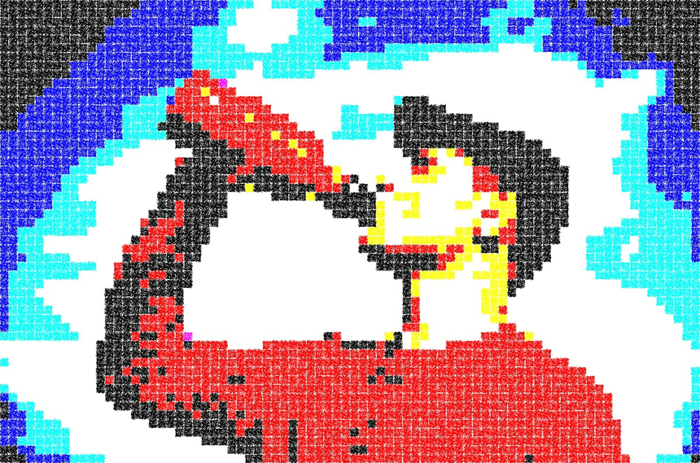

About
- Name: Paul Buetow
- Father, Husband, Computer tinkerer, Yogi, Science fiction lover, cat owner
- Born in: Germany, currently living in: Sofia, Bulgaria
- Profession: Computerist - Solving problems with computers that we wouldn't have without them
- Current job: Site Reliability Engineer
- Education: Diplom-Informatiker (FH) (Diploma from a German University of Applied Sciences, before they had international Bachelor and Masters programs)
- E-Mail: paul@nospam.buetow.org

Table of Contents
Now
Stuff I'm currently up to:
- Learning Bulgarian for the passport
- Digging into AI engineering without taking the slop route — still finding my way there
My sites
My blog here at foo.zone
irregular.ninja - My street photography site (warn: multiple MBs, it's photos after all)
snonux.foo - My microblog (may be sometimes offline since it runs on my home LAN on Raspberry Pi's)
Show me the code
Project showcase
github.com/snonux - My GitHub page
codeberg.org/snonux - My Codeberg page (Codeberg LLM policies apply)
@snonux@fosstodon.org - Me at Mastodon
My LinkedIn profile
Books I've read
Resources, Technical Books, Podcasts, Courses and Guides I recommend
Novels I've read
My gadgets and wishlist
Gadgets I already own
Gadgets I still want
That's all for now...
Back to the main site